AI for Science - 科学技術機械学習
シンプレクティック随伴変数法による高速省メモリなNeural ODEの勾配計算
ニューラルネットワークで微分方程式(ODE)を学習するneural ODEは，連続時間のダイナミカルシステムや確率分布を，高い精度でモデル化できます．しかし，同じニューラルネットワークを何度も使うため，誤差逆伝播法で訓練するには非常に大きなメモリが必要になります．そのため数値積分で勾配を計算する随伴変数(アジョイント)法が用いられますが，数値誤差を抑えるために今度は大きな計算コストが必要になります．
本研究では随伴変数法に用いる数値積分法をシンプレクティックにすることにより，数値誤差なく勾配が計算できる手法(Sanz-Serna, 2016)をベースに，適切なチェックポイント法を組み合わせることで，省メモリ性と高速な勾配計算を両立させました．
IBISワークショップで予定の動画はこちら．
- Takashi Matsubara, Yuto Miyatake, and Takaharu Yaguchi, “Symplectic Adjoint Method for Exact Gradient of Neural ODE with Minimal Memory,” Advances in Neural Information Processing Systems (NeurIPS2021), 2021. (acceptance rate 26%) (openreview) (arXiv)
- Takashi Matsubara, Yuto Miyatake, and Takaharu Yaguchi, “The Symplectic Adjoint Method: Memory-Efficient Backpropagation of Neural-Network-Based Differential Equations,” IEEE Transactions on Neural Networks and Learning Systems, 2023. (link)
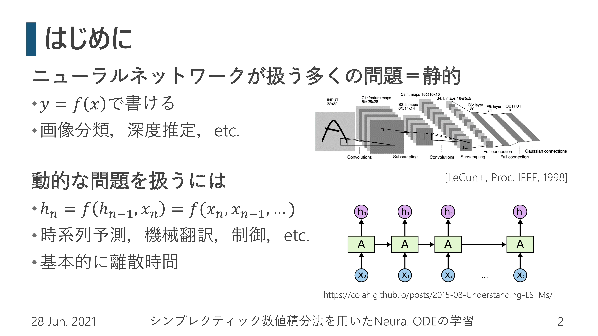 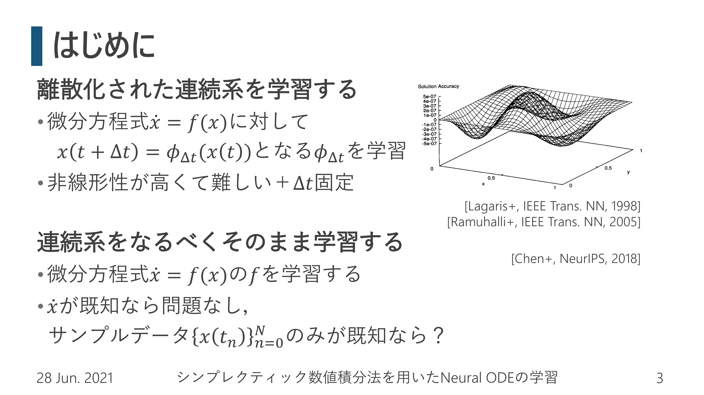

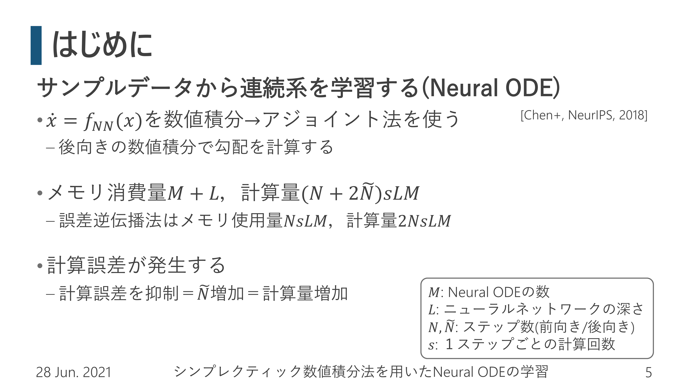 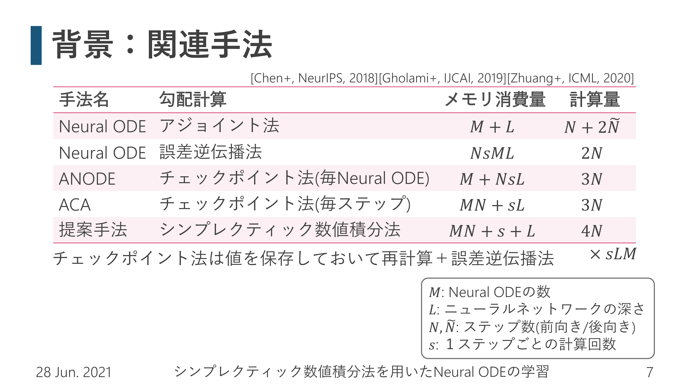

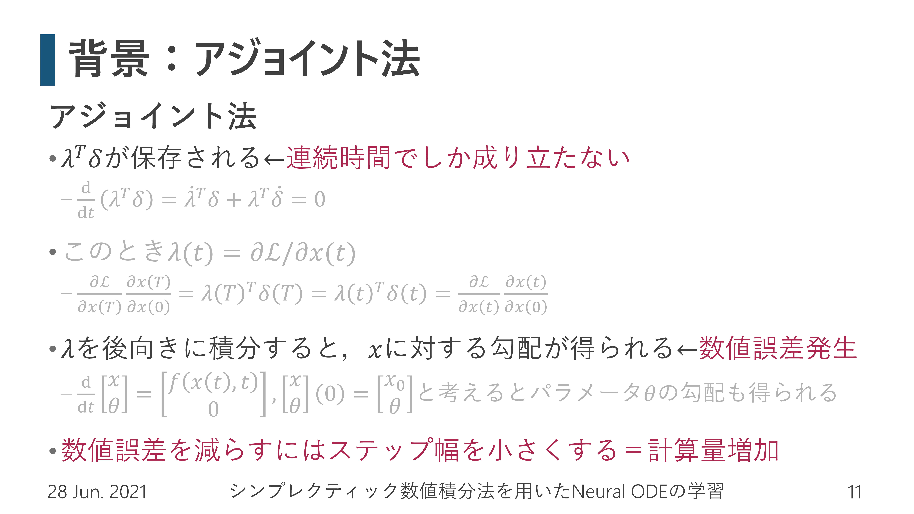

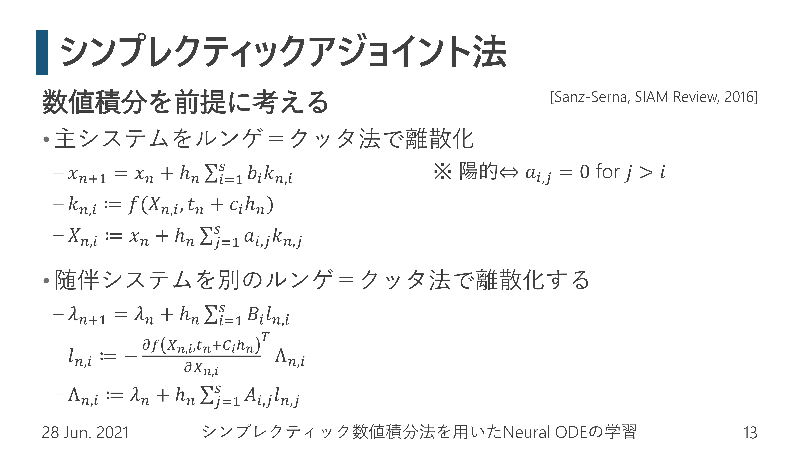 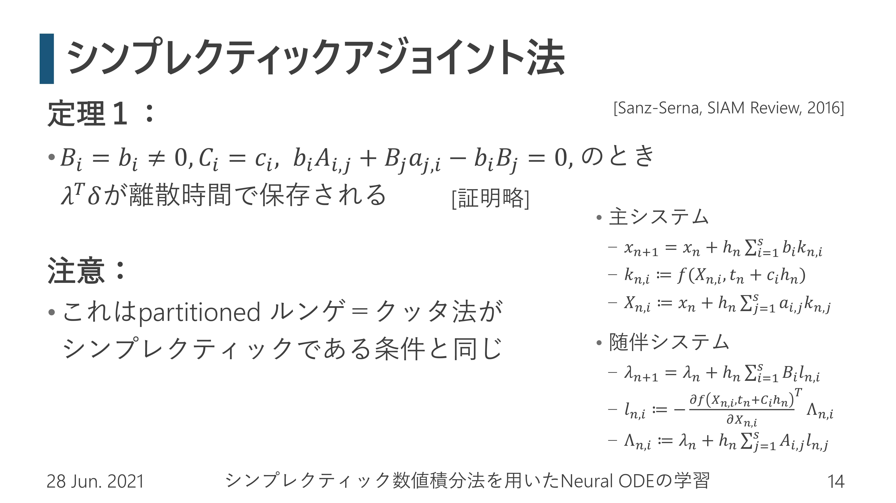 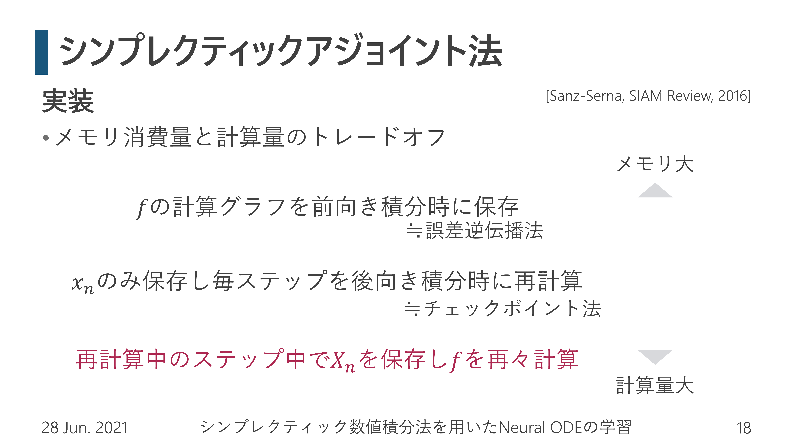 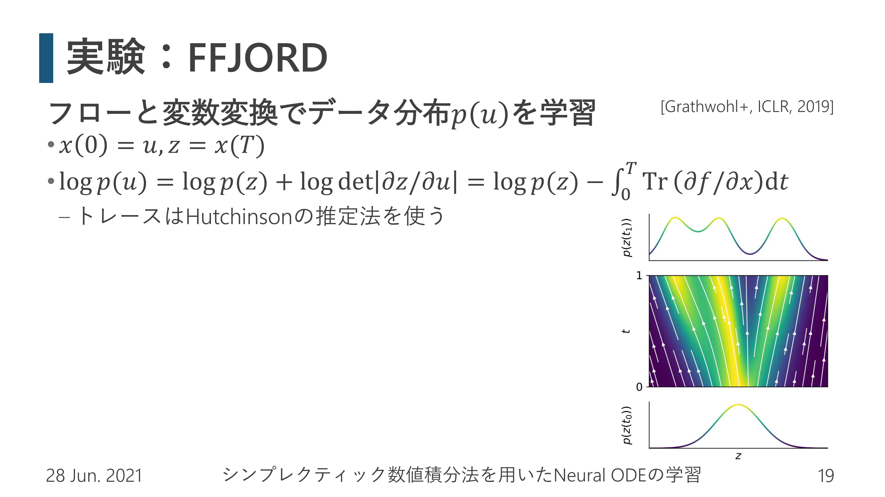 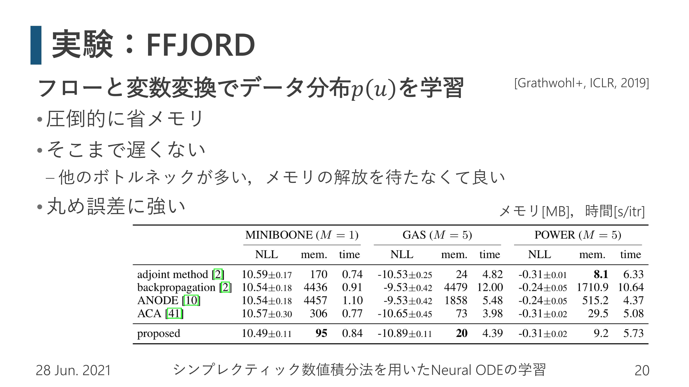 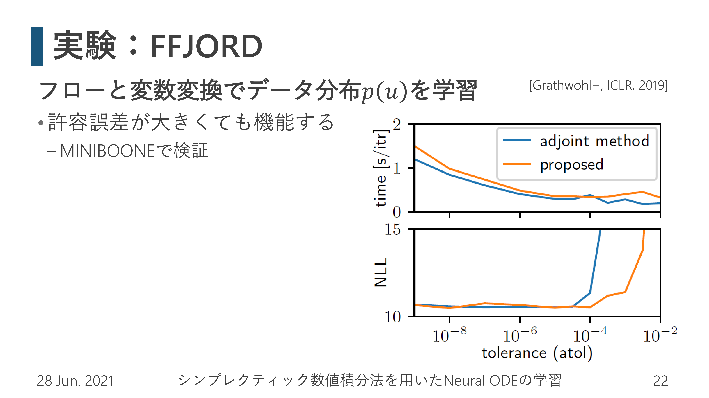 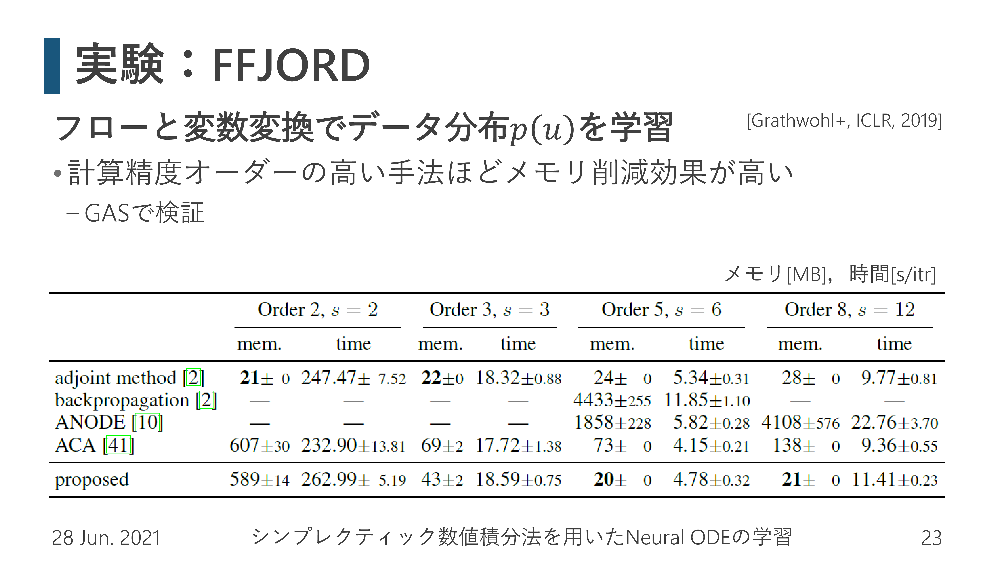 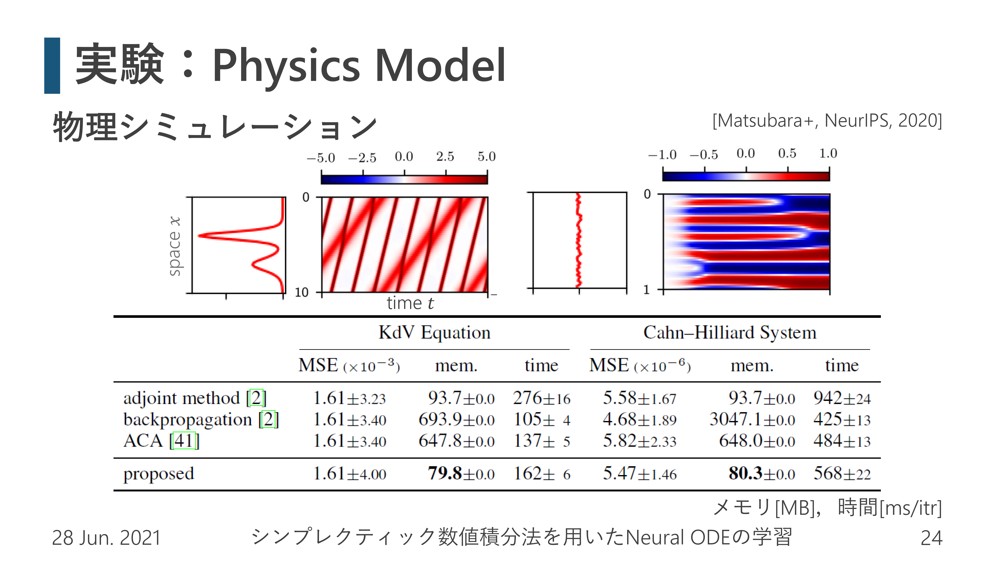 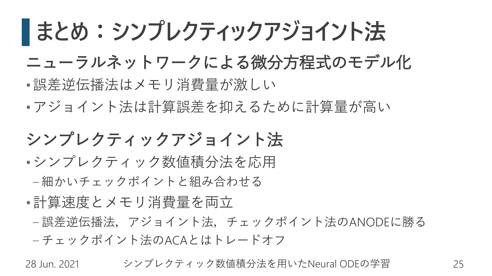